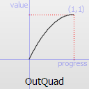
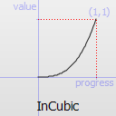
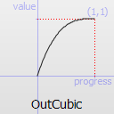
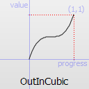
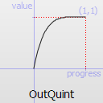
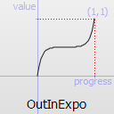
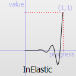
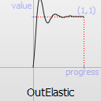

Animator QML Type
Is the base of all QML animators. More...
| Import Statement: | import QtQuick |
| Inherits: | |
| Inherited By: | OpacityAnimator, RotationAnimator, ScaleAnimator, UniformAnimator, XAnimator, and YAnimator |
Properties
- duration : int
- easing
- easing.amplitude : real
- easing.bezierCurve : list<real>
- easing.overshoot : real
- easing.period : real
- easing.type : enumeration
- from : real
- target : QtQuick::Item
- to : real
Detailed Description
Animator types are a special type of animation which operate directly on Qt Quick's scene graph, rather than the QML objects and their properties like regular Animation types do. This has the benefit that Animator based animations can animate on the scene graph's rendering thread even when the UI thread is blocked.
The value of the QML property will be updated after the animation has finished. The property is not updated while the animation is running.
The Animator types can be used just like any other Animation type.
Rectangle { id: mixBox width: 50 height: 50 ParallelAnimation { ColorAnimation { target: mixBox property: "color" from: "forestgreen" to: "lightsteelblue"; duration: 1000 } ScaleAnimator { target: mixBox from: 2 to: 1 duration: 1000 } running: true } }
If all sub-animations of ParallelAnimation and SequentialAnimation are Animator types, the ParallelAnimation and SequentialAnimation will also be treated as an Animator and be run on the scene graph's rendering thread when possible.
The Animator types can be used for animations during transitions, but they do not support the reversible property.
The Animator type cannot be used directly in a QML file. It exists to provide a set of common properties and methods, available across all the other animator types that inherit from it. Attempting to use the Animator type directly will result in an error.
Property Documentation
duration : int |
This property holds the duration of the animation in milliseconds.
The default value is 250.
Specifies the easing curve used for the animation
To specify an easing curve you need to specify at least the type. For some curves you can also specify amplitude, period and/or overshoot (more details provided after the table). The default easing curve is Easing.Linear.
PropertyAnimation { properties: "y"; easing.type: Easing.InOutElastic; easing.amplitude: 2.0; easing.period: 1.5 }
Available types are:
Easing.Linear | Easing curve for a linear (t) function: velocity is constant. |  |
Easing.InQuad | Easing curve for a quadratic (t^2) function: accelerating from zero velocity. |  |
Easing.OutQuad | Easing curve for a quadratic (t^2) function: decelerating to zero velocity. |  |
Easing.InOutQuad | Easing curve for a quadratic (t^2) function: acceleration until halfway, then deceleration. |  |
Easing.OutInQuad | Easing curve for a quadratic (t^2) function: deceleration until halfway, then acceleration. |  |
Easing.InCubic | Easing curve for a cubic (t^3) function: accelerating from zero velocity. |  |
Easing.OutCubic | Easing curve for a cubic (t^3) function: decelerating to zero velocity. |  |
Easing.InOutCubic | Easing curve for a cubic (t^3) function: acceleration until halfway, then deceleration. |  |
Easing.OutInCubic | Easing curve for a cubic (t^3) function: deceleration until halfway, then acceleration. |  |
Easing.InQuart | Easing curve for a quartic (t^4) function: accelerating from zero velocity. |  |
Easing.OutQuart | Easing curve for a quartic (t^4) function: decelerating to zero velocity. |  |
Easing.InOutQuart | Easing curve for a quartic (t^4) function: acceleration until halfway, then deceleration. |  |
Easing.OutInQuart | Easing curve for a quartic (t^4) function: deceleration until halfway, then acceleration. |  |
Easing.InQuint | Easing curve for a quintic (t^5) function: accelerating from zero velocity. |  |
Easing.OutQuint | Easing curve for a quintic (t^5) function: decelerating to zero velocity. |  |
Easing.InOutQuint | Easing curve for a quintic (t^5) function: acceleration until halfway, then deceleration. |  |
Easing.OutInQuint | Easing curve for a quintic (t^5) function: deceleration until halfway, then acceleration. |  |
Easing.InSine | Easing curve for a sinusoidal (sin(t)) function: accelerating from zero velocity. |  |
Easing.OutSine | Easing curve for a sinusoidal (sin(t)) function: decelerating to zero velocity. |  |
Easing.InOutSine | Easing curve for a sinusoidal (sin(t)) function: acceleration until halfway, then deceleration. |  |
Easing.OutInSine | Easing curve for a sinusoidal (sin(t)) function: deceleration until halfway, then acceleration. |  |
Easing.InExpo | Easing curve for an exponential (2^t) function: accelerating from zero velocity. |  |
Easing.OutExpo | Easing curve for an exponential (2^t) function: decelerating to zero velocity. | |
Easing.InOutExpo | Easing curve for an exponential (2^t) function: acceleration until halfway, then deceleration. |  |
Easing.OutInExpo | Easing curve for an exponential (2^t) function: deceleration until halfway, then acceleration. |  |
Easing.InCirc | Easing curve for a circular (sqrt(1-t^2)) function: accelerating from zero velocity. |  |
Easing.OutCirc | Easing curve for a circular (sqrt(1-t^2)) function: decelerating to zero velocity. |  |
Easing.InOutCirc | Easing curve for a circular (sqrt(1-t^2)) function: acceleration until halfway, then deceleration. |  |
Easing.OutInCirc | Easing curve for a circular (sqrt(1-t^2)) function: deceleration until halfway, then acceleration. |  |
Easing.InElastic | Easing curve for an elastic (exponentially decaying sine wave) function: accelerating from zero velocity. The peak amplitude can be set with the amplitude parameter, and the period of decay by the period parameter. |  |
Easing.OutElastic | Easing curve for an elastic (exponentially decaying sine wave) function: decelerating to zero velocity. The peak amplitude can be set with the amplitude parameter, and the period of decay by the period parameter. |  |
Easing.InOutElastic | Easing curve for an elastic (exponentially decaying sine wave) function: acceleration until halfway, then deceleration. |  |
Easing.OutInElastic | Easing curve for an elastic (exponentially decaying sine wave) function: deceleration until halfway, then acceleration. |  |
Easing.InBack | Easing curve for a back (overshooting cubic function: (s+1)*t^3 - s*t^2) easing in: accelerating from zero velocity. |  |
Easing.OutBack | Easing curve for a back (overshooting cubic function: (s+1)*t^3 - s*t^2) easing out: decelerating to zero velocity. |  |
Easing.InOutBack | Easing curve for a back (overshooting cubic function: (s+1)*t^3 - s*t^2) easing in/out: acceleration until halfway, then deceleration. |  |
Easing.OutInBack | Easing curve for a back (overshooting cubic easing: (s+1)*t^3 - s*t^2) easing out/in: deceleration until halfway, then acceleration. |  |
Easing.InBounce | Easing curve for a bounce (exponentially decaying parabolic bounce) function: accelerating from zero velocity. |  |
Easing.OutBounce | Easing curve for a bounce (exponentially decaying parabolic bounce) function: decelerating to zero velocity. |  |
Easing.InOutBounce | Easing curve for a bounce (exponentially decaying parabolic bounce) function easing in/out: acceleration until halfway, then deceleration. |  |
Easing.OutInBounce | Easing curve for a bounce (exponentially decaying parabolic bounce) function easing out/in: deceleration until halfway, then acceleration. |  |
Easing.BezierSpline | Custom easing curve defined by the easing.bezierCurve property. |
easing.amplitude is only applicable for bounce and elastic curves (curves of type Easing.InBounce, Easing.OutBounce, Easing.InOutBounce, Easing.OutInBounce, Easing.InElastic, Easing.OutElastic, Easing.InOutElastic or Easing.OutInElastic).
easing.overshoot is only applicable if easing.type is: Easing.InBack, Easing.OutBack, Easing.InOutBack or Easing.OutInBack.
easing.period is only applicable if easing.type is: Easing.InElastic, Easing.OutElastic, Easing.InOutElastic or Easing.OutInElastic.
easing.bezierCurve is only applicable if easing.type is: Easing.BezierSpline. This property is a list<real> containing groups of three points defining a curve from 0,0 to 1,1 - control1, control2, end point: [cx1, cy1, cx2, cy2, endx, endy, ...]. The last point must be 1,1.
See the Easing Curves for a demonstration of the different easing settings.
from : real |
This property holds the starting value for the animation.
If the Animator is defined within a Transition or Behavior, this value defaults to the value defined in the starting state of the Transition, or the current value of the property at the moment the Behavior is triggered.
See also Animation and Transitions in Qt Quick.
target : QtQuick::Item |
This property holds the target item of the animator.
Note: Animator targets must be Item based types.
to : real |
This property holds the end value for the animation.
If the Animator is defined within a Transition or Behavior, this value defaults to the value defined in the end state of the Transition, or the value of the property change that triggered the Behavior.